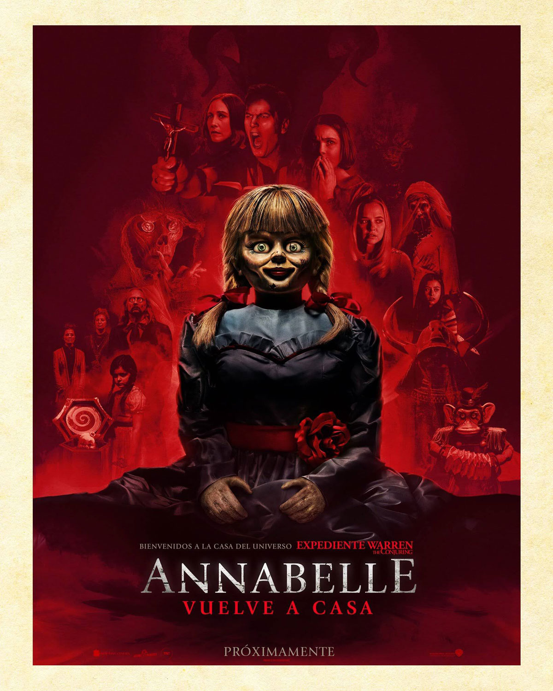
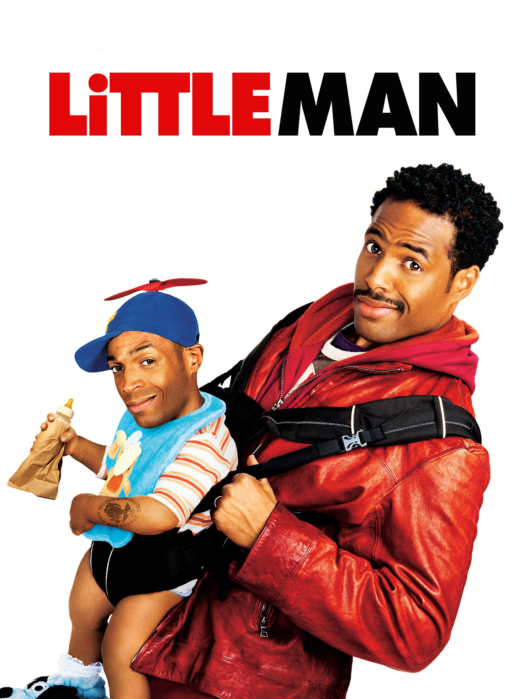
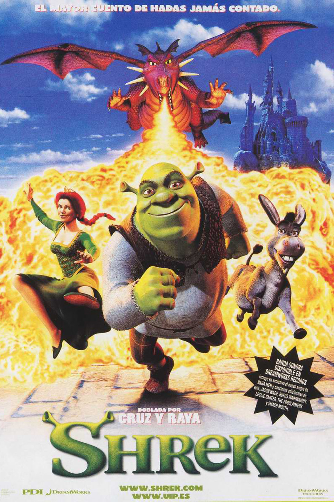
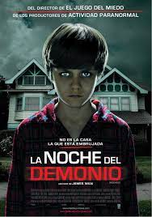

Annabelle 3  Calificación: 4 estrellas Fecha de Estreno: 26/06/2019 Duración: 1h 46m Ed y Lorraine Warren encierran a Annabelle, una muñeca poseída, y la dejan en una vitrina bendecida como medida de seguridad. Sin embargo, una noche terrorífica, Annabelle despierta al resto de espíritus malignos confinados en la misma habitación. Género: Terror Favoritos Avengers EndGame Calificación: 5 estrellas Fecha de Estreno: 26/04/2019 Duración: 3h 2m Los Vengadores restantes deben encontrar una manera de recuperar a sus aliados para un enfrentamiento épico con Thanos, el malvado que diezmó el planeta y el universo. Género: Acción Favoritos Chiquito pero peligroso  Calificación: 5 estrellas Fecha de Estreno: 14/07/2006 Duración: 1h 38m Un pequeño fugitivo de la ley finge ser un niño para poder llegar hasta una gema robada que está oculta en la bolsa de una mujer. Genero: Comedia Favoritos Shrek  Calificación: 5 estrellas Fecha de Estreno: 19/07/2001 Duración: 1h 30m Un ogro llamado Shrek vive en su pantano, pero su preciada soledad se ve súbitamente interrumpida por la invasión de los ruidosos personajes de los cuentos de hadas. Todos fueron expulsados de sus reinos por el malvado Lord Farquaad. Decidido a salvar su hogar, Shrek hace un trato con Farquaad y se prepara para rescatar a la princesa Fiona, quien será la esposa de Farquaad Genero: Infantiles Favoritos Querido John Calificación: 4 estrellas Fecha de Estreno: 15/04/2010 Duración: 1h 48m Un soldado y una universitaria idealistas se enamoran, pero su amor queda marcado por los múltiples y peligrosos destinos a los que envían a John, el soldado. Durante siete años se comunican habitualmente por carta, pero esto acaba trayendo consecuencias inesperadas. Género: Romance Favoritos
La noche del demonio  Calificación: 4 estrellas Fecha de Estreno: 26/05/2011 Duración: 1h 43m La psíquica Elise Rainier, acosada por sus recuerdos, regresa al hogar de su niñez en Nuevo México para enfrentar sus miedos, lo que despierta el mal oculto en su pasado. Género Terror Favoritos Coco Calificación: 5 estrellas Fecha de Estreno: 22/11/2017 Duración: 1h 45m Miguel es un niño que sueña con ser músico, pero su familia se lo prohíbe porque su tatarabuelo, músico, los abandonó, y quieren obligar a Miguel a ser zapatero, como todos los miembros de la familia. Por accidente, Miguel entra en la Tierra de los Muertos, de donde sólo podrá salir si un familiar difunto le concede su bendición, pero su tatarabuela se niega a dejarlo volver con los vivos si no promete que no será músico. Debido a eso, Miguel escapa de ella y empieza a buscar a su tatarabuelo. Género Infantiles Favoritos Son como niños Calificación: 3 estrellas Fecha de Estreno: 22/07/2010 Duración: 1h 42m Son Como Niños es una comedia sobre cinco amigos y sus ex compañeros de equipo, que se reúnen años después junto con sus esposas e hijos, para rendirle tributo a su recién fallecido entrenador de basquetbol de la infancia. Género Comedia Favoritos Cartas a Julieta Calificación: 5 estrellas Fecha de Estreno: 14/05/2010 Duración: 1h 45m En Italia, una joven encuentra una carta de amor para Julieta Capuleto y decide investigar para encontrar al autor. Género Romance Favoritos Divergente Calificación: 5 estrellas Fecha de Estreno: 17/04/2014 Duración: 2h 19m En una sociedad futurista, la gente está dividida entre facciones basadas en sus personalidades. Después de que una joven descubre que ella es una divergente y nunca será de ningún grupo, revela un complot para destruir a quienes son como ella. Género Acción Favoritos